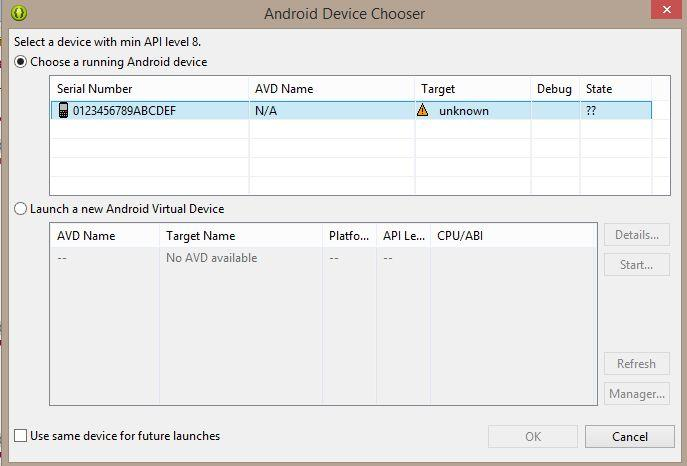
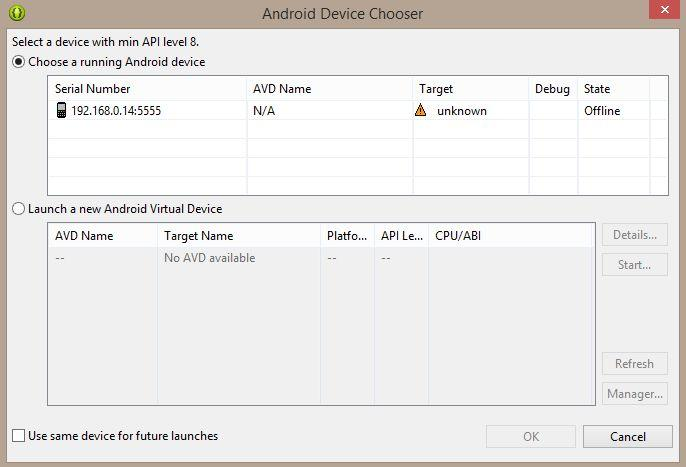

ADB Android Device Unauthorized
Since I reinstalled Eclipse (simply deleted and downloaded it again) I can't debug my applications on Samsung Galaxy i9001 (with CyanogenMod - Android 4.4.2). It worked fine before reinstallation.
Unplug/plug, Uncheck/check "Debug Enabled", adb kill-server/adb start-server, restart phone/computer doesn't work for me. On the device authorize dialog never appears (but I remember that dialog appeared before reinstallation). I have no idea how to force this authorize dialog to display. There is no abd_key.pub file in .android directory. When i try read cpu info DDMS says:
[2014-04-15 12:47:06 - DDMS] device unauthorized. Please check the confirmation dialog on your device.
Any ideas? Is it possible to generate keys manually without confirmation dialog?
USB Connection 
Wireless Connection 
Answer
It's likely that the device is no longer authorized on ADB for whatever reason.
1. Check if authorized:
<ANDROID_SDK_HOME>\platform-tools>adb devices List of devices attached 4df798d76f98cf6d unauthorized
2. Revoke USB Debugging on phone
If the device is shown as unauthorized , go to the developer options on the phone and click "Revoke USB debugging authorization" (tested with JellyBean & Samsung GalaxyIII).
3. Restart ADB Server:
Then restarted adb server
adb kill-server adb start-server
4. Reconnect the device
The device will ask if you are agree to connect the computer id. You need to confirm it.
5. Now Check the device
It is now authorized!
adb devices <ANDROID_SDK_HOME>\platform-tools>adb devices List of devices attached 4df798d76f98cf6d device
Suggest
Try forcing ADB to create new keys.
-
On Linux/OSX:
$ mv ~/.android/adbkey ~/.android/adbkey.old
$ mv ~/.android/adbkey.pub ~/.android/adbkey.pub.old $ adb kill-server $ adb start-server
-
On Windows 10 (thank you, Pau Coma Ramirez, Naveen and d4c0d312!):
- Go to
%HOMEPATH%\Android\.android\ - Look for files called
adbkeyoradbkey.pub. - Delete these files. Or, if you want to be on the safe side, move them to another directory.
- Repeat the above steps in
%USERPROFILE%\.android\ - Try again
- Go to
After this I didn't even need to unplug my phone: the authorization prompt was already there.